Cassy Commander · field report · 2026-09-03
A Pixel 8 emulator was paired to the live soundwave-linux hub and driven through the real pairing flow, a real attached session, and a real streaming turn. This is what the screen showed — every claim below has a screenshot behind it — followed by three unconstrained directions for a phone-native Commander.
The one-sentence version. A phone can pair to the hub, but only if someone with a terminal on the target machine already knows an undocumented flag — and once paired, the terminal never renders a single character, because hub-web calls a JavaScript API that this browser does not have and nothing anywhere tells you so.
Three findings dominate everything else:
unauthorized, and the one-time invitation is burned. D1AbortSignal.any() (Chrome 116+) is called with no feature detection, so every attach throws, the reconnect loop spins forever, and the "Connecting…" timer freezes at 0s. D3Honesty note on the browser. The AVD ships Chrome 113 (May 2023), not current stable. That is a real confound and I have flagged, per defect, which findings are engine-age artifacts and which are authored in hub-web. Two things make D3 worth fixing anyway: Android is exactly where stale Chrome and WebView builds survive, and the failure mode — a silent forever-spinner with the real error truncated three taps deep — is a hub-web choice, not a browser one. Every layout, spacing, contrast, and hierarchy defect below is CSS the project authored and reproduces at any engine version.
Nine screens, two dead ends, one success. Wall-clock from first page load to a paired device: 6 minutes, of which roughly four were spent recovering from failures that a first-time user would not recover from at all.
Worth recording because the runbook implies it is hard: the emulator reached https://soundwave-linux.tailf5a734.ts.net/ directly. Booting with -dns-server 100.100.100.100 plus QEMU's user-mode NAT is enough — MagicDNS resolves and 100.x traffic routes out through the host's tailnet interface. No adb reverse, no proxy, no hosts file. Total DNS/network debugging time: zero.
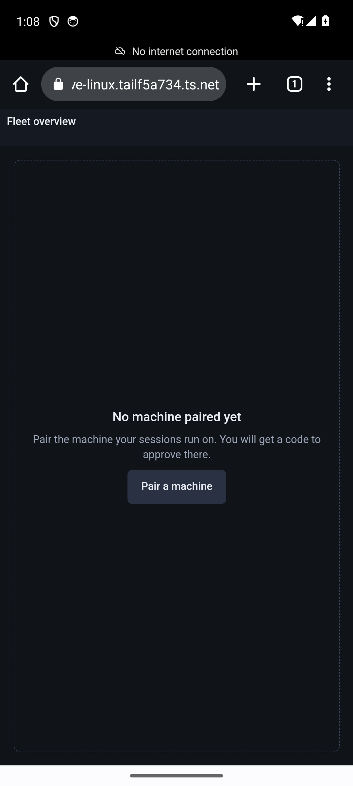
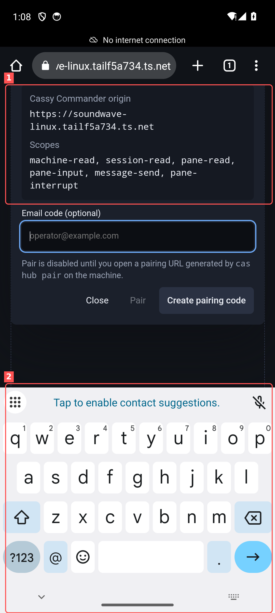
The in-page path — the only path a phone-only user has — answers "The pairing service is unavailable." The relay origin is absent from this bundle, so relayOrigin is falsy and main.ts:1121 substitutes a disabled-reason paragraph. The message the user sees comes from main.ts:1704 and does not say what to do instead.
Running the runbook command verbatim on the target machine:
cas hub pair --origin https://soundwave-linux.tailf5a734.ts.netprints a fragment URL and a QR code. Opening that URL on the phone, filling the form, and tapping Pair produces the word unauthorized and throws the invitation away. The cause is a default mismatch, documented in full as D1: the CLI's --scopes default is read-only, the form pre-checks all six scopes.
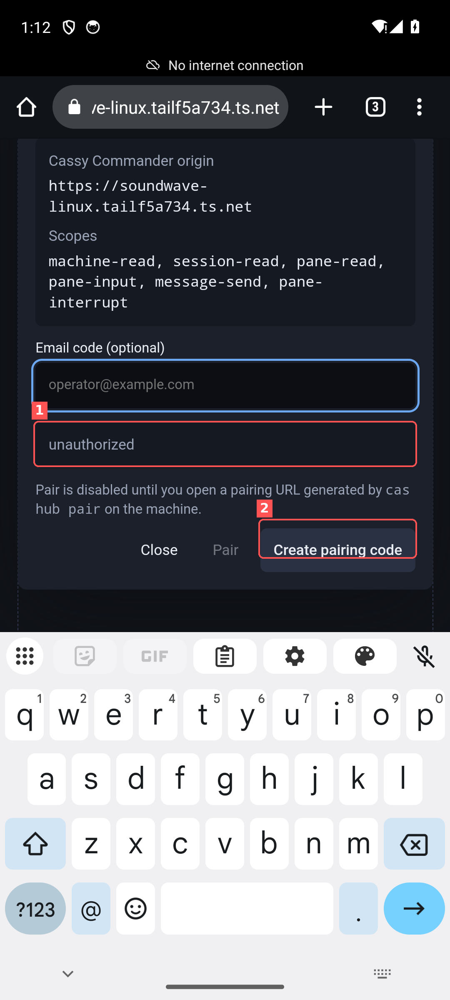
unauthorized, styled as a quiet hint rather than a failure. (2) the dialog has reverted to its pre-invitation state — the one-time code is consumed and there is no "try again" that works.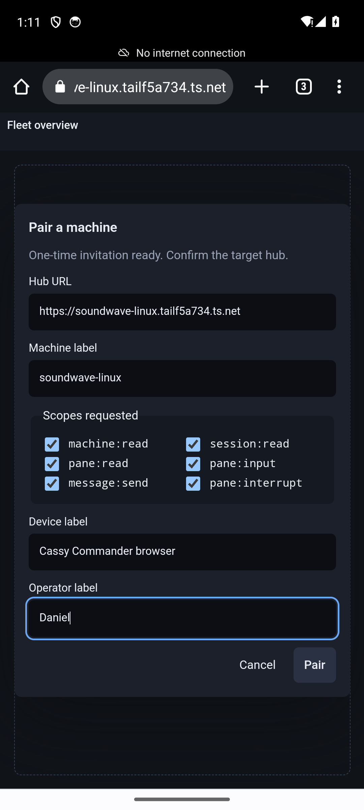
An Android VIEW intent for a URL that differs from an open tab only by its #fragment lands on the existing tab. The SPA does not re-initialise, so consumePairingFragment() never runs, and because the pending-pairing store is sessionStorage-backed (pending-pairing.ts:137) the invitation is invisible to every other tab. The screen after "open the pairing link" is indistinguishable from the screen before it. I had to append a throwaway ?t=N query to force a real navigation.
Compounding it: consuming a valid invitation does not open the pairing dialog. Nothing in main.ts calls showModal() on #pair-dialog when a pending invitation exists (the only auto-open is the attention-item "repair" action at main.ts:1504). The user opens the link, sees the same empty state, and must guess that the answer is to tap Pair a machine a second time.
cas hub pair --origin https://soundwave-linux.tailf5a734.ts.net \
--scopes machine:read,session:read,pane:read,pane:input,message:send,pane:interrupt
# then open https://…ts.net/?t=4#pair=…&hub=… (unique query forces a real load)
# then tap "Pair a machine" again, fill Machine label + Operator label, tap PairPairing succeeded and persists. Audit log confirms pairing_exchange · allowed at 17:14:01Z followed by DPoP auth and websocket_read · pane:read · allowed. The device credential survives tab close and reopen — a later fresh tab was still paired.
The structural conclusion. There is currently no path for a phone to pair itself. The in-page relay path is unavailable in this build; the CLI path requires a terminal on the target machine and knowledge of a flag that is not in the runbook. A phone is a second screen for a machine you already own, so a terminal is usually available — but "pair my phone" is a two-device, one-shot, ten-minute-expiry operation where every failure burns the invitation and reports one word.
| Screen | Friction | Cost |
|---|---|---|
| Pair dialog opens | Autofocus on optional field pops keyboard, hides title | Disorienting; 1 extra tap to dismiss |
| Create pairing code | Relay unavailable; message offers no alternative | Dead end |
| Open fragment URL | Lands on existing tab; nothing happens | Invisible failure |
| After fragment loads | Dialog does not auto-open | User must re-tap and guess |
| Tap Pair | unauthorized; invitation burned | Full restart, ~90 s |
| Form entry | Keyboard covers the Pair button while typing | Blind submit or extra dismiss |
Fourteen defects, ordered by how much they cost a person holding a phone. Each entry names the state that produced it and the source file most likely responsible. Nothing in hub-web/ or hub/ was modified — these are hypotheses for a follow-up, not fixes.
cas hub pair --origin X defaults --scopes to machine:read,session:read,pane:read. The Commander form ships DEFAULT_PAIRING_SCOPES with all six pre-checked, including pane:input, message:send, pane:interrupt. The exchange therefore requests more than the invitation's ceiling, the hub returns 401, and the UI prints the bare wire token.
Confirmed in hub state, not inferred: the invitation minted at 2026-09-03T17:10:50Z carries max_scopes: [machine-read, session-read, pane-read], failed_attempts: 1, consumed_at: null.
docs/commander-fleet-runbook.md verbatim, then submit the form unchanged.a6-unauthorized.png, ~/.cas/hub/auth.jsonhub-web/src/main.ts:1115 (scopeChecks(pairingDraft.scopes)) never reconciles against the invitation's granted scopes; cas hub pair's read-only default is a second, independent half of the same bug. Either make the form request only what was granted, or make the CLI default match the UI, or say which three boxes to uncheck.unauthorized. The pairing service is unavailable. Both render in .pair-status, a quiet low-contrast box that reads like a hint, not a failure — no icon, no --state-crit tint, no next step, and in the unauthorized case the dialog silently reverts and destroys the one-time invitation behind it.
hub-web/src/main.ts:1704 and :525 assign the caught error's message straight to pairingStatus. DESIGN.md reserves --state-crit and a 2px rule for hard failures; this path uses neither.Every pane, every orientation, both supervisor and worker: a black well and Connecting to cas-src-young-raven-93… 0s, forever. The WebSocket is authorised — the hub audit log shows websocket_read · pane:read · allowed — so this is a client-side throw, not an access failure.
The cause is legible only three taps deep in the attention panel: Terminal attach failed for soundwave-linux.tailf5a734.ts.net: AbortSignal.any is not a… ×26. hub-web/src/connection.ts:333 calls AbortSignal.any([this.eventAbort.signal, signal]). That API shipped in Chrome/Edge 116, Firefox 124 and Safari 17.4; this browser is Chrome 113, so every attach throws TypeError and the reconnect loop spins.
The second half of the defect is the one that is engine-independent: the connecting overlay's elapsed counter never advances. connection-state-view.ts:49–56 only reveals its diagnostic step at ≥5s and its actionsAvailable escape hatch at ≥15s. With the counter frozen the user reaches neither. Reproduced twice — frozen at 1s while the pane header ticked to 28s, and frozen at 0s across an entire 20-second screen recording.
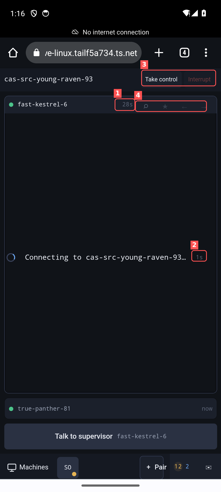
--text-lo glyphs.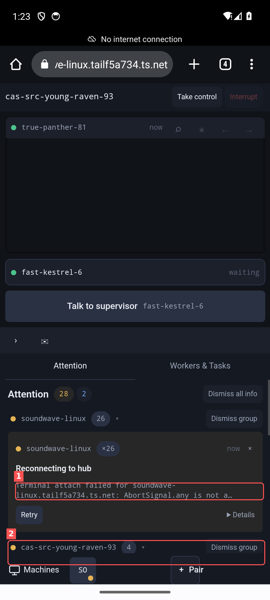
27-streaming-portrait.mp4 (frames 20/200/400 all read 0s), 34-attention-details.png, hub audit log.AbortSignal.any at connection.ts:333; drive the connecting overlay from a ticking clock so the 5s and 15s affordances can actually fire; surface an unsupported-browser banner instead of an infinite spinner.AbortSignal.any throw needs a Chrome 116+ retest to confirm the terminal then paints.Ruled out. logcat showed continuous GL ERROR :GL_INVALID_VALUE : glFramebufferTexture2D at ~10 Hz in portrait. That is swiftshader noise from the emulator's software GPU, not the cause: it stops entirely in landscape while the terminal stays equally blank in both orientations. I am not attributing the failure to canvas sizing.
Portrait, keyboard up: the session header, the worker strip, the Talk to supervisor row and the entire bottom rail are gone. What remains is one black terminal well and a keyboard. There is no in-app way back — only the system Back button.
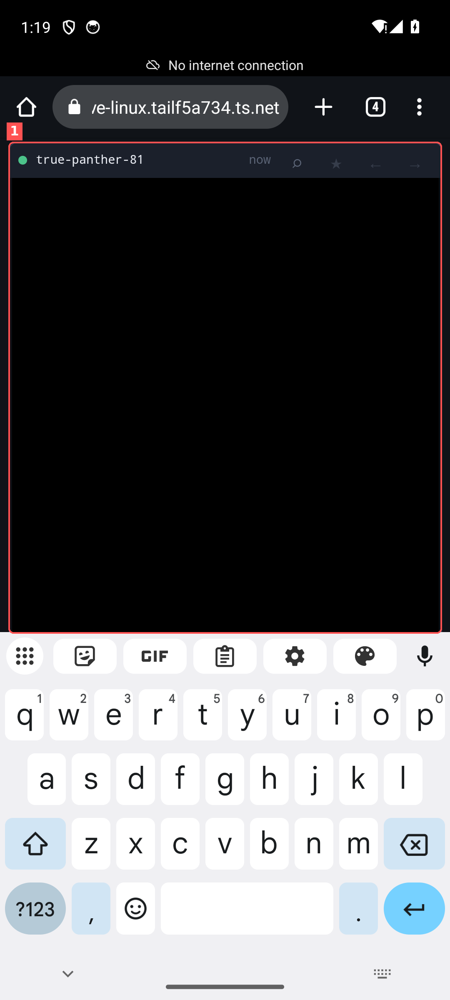
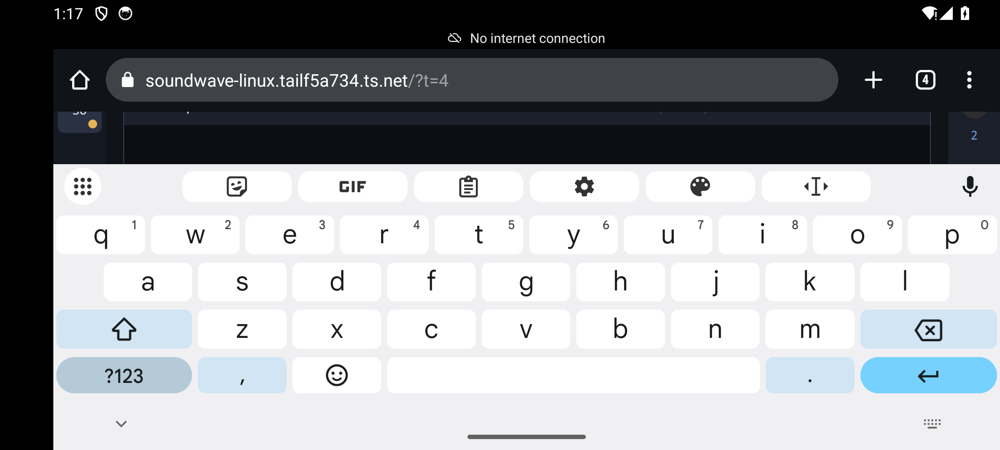
styles.css sizes .shell at 100dvh and pads the rail with env(safe-area-inset-bottom). Neither responds to the on-screen keyboard; the layout viewport shrinks and the rail goes with it. The VisualViewport API or interactive-widget=resizes-content is the usual answer, and the composer should own a keyboard-aware bottom inset.Rotating crosses the 53rem breakpoint, so a phone in landscape gets the full desktop composition: a 48px left machine rail, a right attention rail, a ⌘K chip for a chord no phone can produce, and two terminals allocated ~250px of height each.
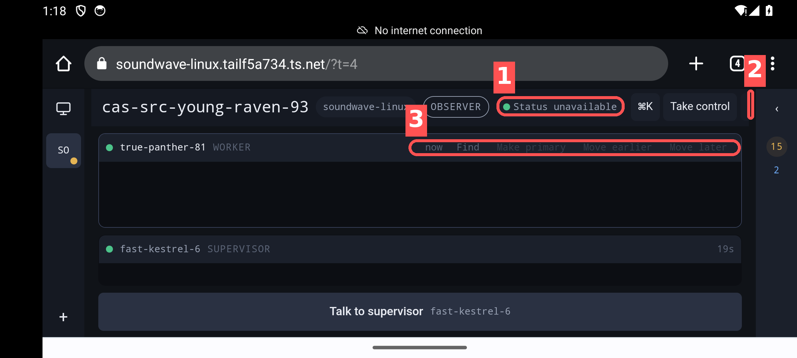
--text-lo text labels at roughly 2.4:1 contrast — below WCAG AA for any text size.settings put system user_rotation 1 with the keyboard closed.styles.css:1609 key on max-width: 53rem only. A landscape phone is wide but only ~410 CSS px tall; the breakpoint needs a height or pointer: coarse term, not just width. The green-dot/"unavailable" contradiction is a separate state-mapping bug in the connection summary.On attach, the supervisor gets ~60% of the viewport and the worker collapses to a 32px bar showing a name and now — no output, no last line, no status. Promoting a worker to primary works and is the right escape hatch, but it costs a tap on an unlabelled ★ glyph and demotes the supervisor to the same 32px stub. You can never see both.
styles.css:1861 onward sizes .secondary-pane-strip .pane.collapsed at --space-10. The comment there ("Workers cannot mount a terminal here") is an accurate description of the constraint and an accurate description of the problem: the compact layout budgets for one terminal, and picks the wrong one by default.This is the "outlines on the bottom nav are fucked up" complaint, and it is literally an outline. In one 48px row:
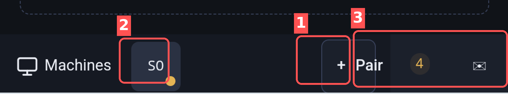
--line-strong border — the only outlined element in the rail, and a token DESIGN.md explicitly reserves for the focused-pane border ("do not use it as a decorative accent"). (2) the machine chip is a filled --bg-raised box truncated to two characters, taller than its neighbour, optically off-centre, with its amber status dot clipped at the corner. (3) a hard vertical seam where the collapsed context pill paints its own --bg-panel over the rail — two different background tones in one bar, with no border to explain the change. And Machines itself sits in no container at all.styles.css:1662–1673 gives .machine-rail .pair-machine the --line-strong border; styles.css:1749–1760 positions .context-panel.collapsed as a fixed pill over the rail with its own background. The rail reserves right-hand padding for that pill (padding-right: calc(var(--mobile-context-pill-width) + …)) but never unifies the two surfaces.The rail's right end shows bare digits — 4, then 11 2, then 25 2, then 27 2 — in amber and blue with no label, no icon and no unit. Two adjacent numbers in different colours read as one number. Over the session they climbed from 4 to 28 purely because a failing reconnect loop was minting one attention item per attempt (D3), so the badge was measuring its own bug.
.context-panel.collapsed .attention-count at styles.css:1789 strips to --fs-xs with --line-width padding. Severity should be a shape or an icon, not two adjacent tints of a number.The message sheet is the best-designed surface in the phone build: a real Tap to talk as the full-width primary action, Keyboard and Send message beneath, and the honest hint "Voice ready — tap the mic, review, then send." Then an amber line says "Take control to enable terminal input, messages, and interrupts." — after pairing with message:send granted. The capability and the mode gate are two different concepts presented as one.
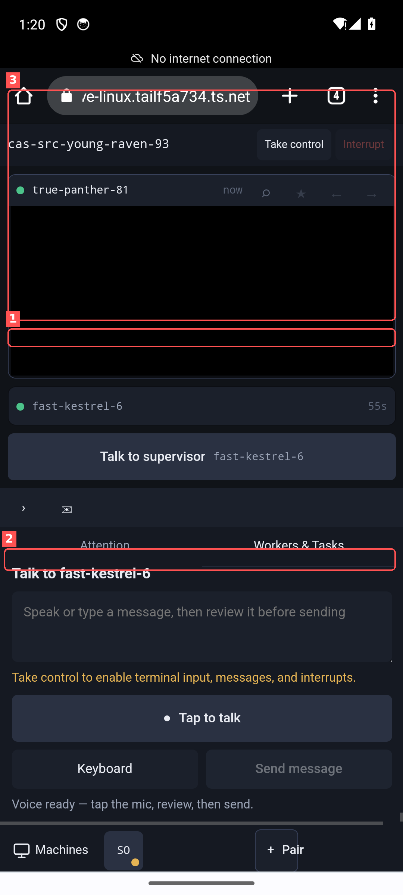
› and an envelope) on a bare row above the tabs, unlabelled and ungrouped. (2) the control gate, presented as a warning under a composer that looks ready. (3) the sheet takes ~45dvh, leaving the terminal a ~200px sliver.styles.css:1836–1849 (#message-mic full width, #message-keyboard shown) is the composer; the OBSERVER→control transition lives in the session header, two surfaces away from where the user is typing. On a phone, "Take control" should be the composer's own primary affordance.Remove selected machine is the only full-width button in the drawer, rendered in --state-crit red, positioned directly above the bottom rail — the exact band a thumb rests in. Session rows above it, by contrast, have no tap affordance at all: no chevron, no divider, no row background. The destructive action is the most button-like thing on the screen.
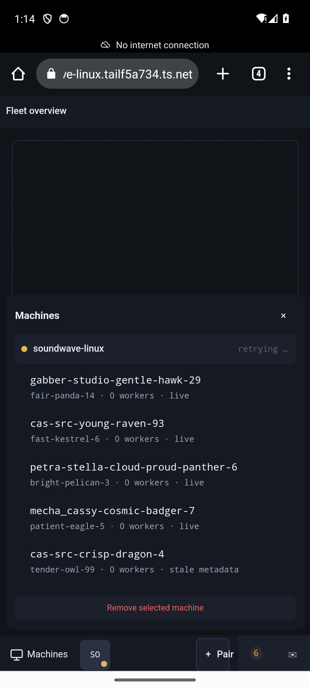
retrying … status in --text-lo, and the drawer's top edge leaving a strip of the empty-state dashed border visible behind it.--space-8 (32px) with font-size:0 and a ::after glyph (styles.css:1888–1898) — a 32px target inside a 32px header.--fs-xs (11px) is used for the session-header action buttons at max-width:53rem; at 420dpi that is small even before the --text-lo colour is applied.--text-lo as an interactive colour fails contrast--text-lo (#5C6577) on --bg-panel (#151922) is roughly 2.4:1 — below WCAG AA's 4.5:1 for body text and below 3:1 for UI components. It is used for pane-control glyphs, timestamps, the retrying … machine status, unfocused pane chrome, and the "Move earlier / Move later" labels. Indoors on a desk this reads as restraint; on a phone at arm's length it reads as absent. Six of the fourteen defects here are partly a contrast problem.
DESIGN.md assigns --text-lo to "timestamps, disabled metadata, and unfocused pane chrome". The compact layout then reuses it for active controls, which the token was never meant to carry.Both No machine paired yet and No session open draw a 1px dashed border around the entire content viewport with a three-line message centred in it. On a phone this is ~1,500px of empty ruled box. The dashed treatment communicates "drop something here" on desktop and "the page failed to load" on a phone.
Close the tab, reopen the hub: paired, but back to the empty state. The app does not restore the last attached session. Getting back to what you were watching costs three taps every single time — and on a phone, "glance at the thing I was watching" is the dominant use case, not the exception.
| # | Defect | Sev | Suspected source | Engine-independent |
|---|---|---|---|---|
| D1 | CLI scope default ≠ UI scope request → unauthorized | P0 | main.ts:1115 + cas hub pair | yes |
| D2 | Raw wire errors, no recovery, invitation burned | P1 | main.ts:1704, :525 | yes |
| D3 | Terminal never renders; connect timer frozen | P0 | connection.ts:333, connection-state-view.ts:49 | partly |
| D4 | Keyboard removes all navigation | P1 | styles.css 100dvh + env() | yes |
| D5 | Landscape falls back to desktop grid | P2 | styles.css:1609 | yes |
| D6 | Workers collapse to a 32px stub | P1 | styles.css:1861 | yes |
| D7 | Bottom rail: stray outline, clipped chip, colour seam | P1 | styles.css:1662, :1749 | yes |
| D8 | Unlabelled two-tone attention digits | P2 | styles.css:1789 | yes |
| D9 | Composer ready, then gated by a warning | P2 | styles.css:1836 + header mode | yes |
| D10 | Destructive action at thumb height | P2 | machine drawer markup | yes |
| D11 | Sub-48dp targets, 11px labels | P2 | styles.css:1888, :1727 | yes |
| D12 | --text-lo ≈2.4:1 used for controls | P2 | styles.css / DESIGN.md | yes |
| D13 | Full-viewport dashed empty states | P3 | empty-state markup | yes |
| D14 | No session restore on reopen | P2 | storage.ts / main.ts | yes |
Today's phone build is the desktop console with the columns stacked. That inherits the desktop's premise — you are sitting down to drive a fleet — which is exactly the situation in which nobody reaches for a phone. The honest phone premise is different and much narrower:
You are away from the desk. Something either needs you or it doesn't. If it does, you want to answer it in two taps and put the phone back in your pocket.
Everything follows from that. A terminal emulator is not the primary object on a phone — the decision is. Reading a 13px monospace grid on a 6-inch screen is a fallback, not a feature. And the product already has the raw materials: an attention model with severity and grouping, a voice composer (speech-input.ts) that works, per-worker status, and hub push connectivity. They are just arranged as a smaller desktop.
Three directions follow. They are not variations on the current layout; each starts from a different answer to "what is the primary object on this screen?"
Primary object: an attention item. The home screen is not a fleet, not a session, not a terminal — it is a prioritised, grouped list of things that want a decision, newest and most severe first. Each card carries the machine, the agent, a one-line summary, the last 3–5 lines of relevant output as a quoted excerpt, and its actions inline: Approve, Redirect, Interrupt, Snooze. The terminal is reachable — "Open terminal" is on every card — but it is never where you start.
Cost: the attention model must carry enough context to decide — a few lines of excerpt and a suggested action per item. That is a hub-side change, not just CSS.
Primary object: an agent. One full-bleed card per agent — supervisor and every worker are peers — with horizontal swipe to move between them and a dot indicator for position. Each card is a self-contained unit: status, current activity, a live readable output tail sized to the phone (not a shrunken 80-column grid), and a fixed action bar at the bottom of the card. Vertical swipe moves between sessions.
Cost: the reflowing tail is a new render path — you cannot get it by restyling the Ghostty canvas, and it needs a server-side or client-side "last N logical lines" notion that survives ANSI.
Primary object: a conversation. The app opens on a single push-to-talk control and a transcript. You hold, speak — "what's blocking true-panther?", "tell fast-kestrel to merge it", "interrupt the gabber worker" — and the response comes back as a short synthesised summary plus a card you can tap for detail. Routing (which agent, which session) is inferred from what you said and shown for confirmation before anything is sent. The terminal is a detail view you open deliberately.
Cost: the largest of the three. Needs intent routing, a summarisation path, and TTS, and it leans on SpeechRecognition support that varies by browser. It also inverts the trust model: an explicit confirm step for every mutating action is not optional.
Ship A as the phone's home screen, fold B in as its detail view, and treat C as the input method for both.
They are not really three products; they are three answers to "what is the primary object", and the right composition is a stack:
speech-input.ts already implements mic → transcript → review → send; promoting it from a button inside a bottom sheet to the persistent primary input, with an explicit confirm-target step, is the cheapest large win available and it sidesteps the keyboard catastrophe (D4) entirely.Sequencing. Fix D3 and D1 first — they are blockers and neither is a design question. Then build A against the existing attention feed. Then B. Then promote C. A and B are mostly composition and CSS; C is the one that needs new backend surface, so it should not gate the first two.
What I would not do: keep iterating on the compact media query. Every defect from D4 to D13 is a symptom of one decision — that the phone is the desktop with narrower columns. The 53rem block in styles.css is already 300 lines of careful, well-commented compensation for that premise, and the comments in it ("Workers cannot mount a terminal here", "the term stacks above its value instead of shredding it", "OBS / Ctrl / Int made a first-time Pixel pass read like a debug toolbar") read as an accurate account of a layout arguing with itself. The phone needs its own composition, not a better argument.
| Item | Value |
|---|---|
| AVD | ozer_pixel_api34 · Android 14 (API 34) · google_apis |
| Emulator PID / log | 372243 · emulator.log |
| Display | 1080×2400 @ 420 dpi → DPR 2.625 → ~411×914 CSS px portrait |
| Browser | Chrome 113.0.5672.136 (bundled with the system image) |
| GPU | swiftshader_indirect (software) |
| Hub | cas 3.13.0 (ee619be) · pid 19952 · 127.0.0.1:4173 + :45743 |
| Public origin | https://soundwave-linux.tailf5a734.ts.net/ (Tailscale Serve) |
| Session under test | cas-src-young-raven-93 · supervisor fast-kestrel-6 · worker true-panther-81 |
| Breakpoint crossed | max-width: 53rem — portrait compact, landscape desktop |
# emulator, headless, tailnet DNS
nohup ~/android-sdk/emulator/emulator -avd ozer_pixel_api34 \
-no-window -no-audio -gpu swiftshader_indirect -no-snapshot \
-dns-server 100.100.100.100 > emulator.log 2>&1 &
# open the hub
adb shell am start -a android.intent.action.VIEW \
-d 'https://soundwave-linux.tailf5a734.ts.net/' com.android.chrome
# pairing — the default that FAILS (read-only ceiling vs six-scope request)
cas hub pair --origin https://soundwave-linux.tailf5a734.ts.net
# pairing — what actually works
cas hub pair --origin https://soundwave-linux.tailf5a734.ts.net \
--scopes machine:read,session:read,pane:read,pane:input,message:send,pane:interrupt
# open the fragment URL with a UNIQUE query, or Chrome reuses a tab and drops it:
# https://…ts.net/?t=4#pair=…&hub=…
# evidence capture
adb exec-out screencap -p > NN-state.png
adb shell screenrecord --time-limit 20 --bit-rate 6000000 /sdcard/s3.mp4
adb pull /sdcard/s3.mp4
adb shell settings put system accelerometer_rotation 0
adb shell settings put system user_rotation 1 # landscape; 0 = portrait
adb logcat -d -s chromium:* # surfaced the GL noise
python3 -c "…PIL…" # crops, 2× zoom, annotationsRe-run D3 on a browser with AbortSignal.any: a physical Android device on current Chrome, or an AVD image with a newer bundled Chrome, or Chrome DevTools device emulation at 411×914 / DPR 2.625. If the terminal paints, D3's first half is engine age and only the frozen timer and the buried truncated error remain as product bugs. Every other defect in this report is authored CSS or markup and will reproduce on any engine.
| File | State |
|---|---|
| 01-home.png | Emulator home screen, post-boot |
| 02-chrome-first-load.png | Chrome first-run welcome |
| 03-chrome-firstrun-2.png | Notification prompt; hub already rendering behind |
| 04-fleet-overview-unpaired.png | Fleet overview, unpaired empty state |
| 05-pair-dialog.png | Pair dialog, autofocus keyboard open |
| 06-pair-dialog-nokbd.png | Pair dialog, keyboard dismissed |
| 07-pairing-code.png | "The pairing service is unavailable." |
| 08-pair-fragment-open.png | Fragment URL opened — nothing happened (tab reuse) |
| 09-invitation-dialog.png | Dialog still says Pair is disabled |
| 10-invitation-loaded.png | Fresh fragment loaded via unique query |
| 11-invitation-dialog-open.png | Invitation form, keyboard covering lower half |
| 12/13-invitation-form-top/bottom.png | Full invitation form, keyboard dismissed |
| 14-keyboard-covers-pair-button.png | Typing the machine label; Pair button hidden |
| 15-invitation-form-filled.png | Form complete, ready to submit |
| 16-after-pair-submit.png | unauthorized; invitation burned |
| 17-fullscope-form.png / 17-fullscope-loaded.png | Re-minted full-scope invitation |
| 18-paired.png · 18b-bottom-rail-zoom.png | Paired; bottom rail at 1× and 2× |
| 19-machines-drawer.png | Machines drawer with session list |
| 20/21-session-attached/connected.png | Attached; connect timer frozen at 1s vs header 28s |
| 22-worker-expanded.png | Worker promoted to primary; still blank |
| 23-after-output.png | After 3× 200-token output bursts — still blank |
| 24-landscape-keyboard-crush.png | Landscape + keyboard; app in a ~110px band |
| 25-landscape-nokbd.png | Landscape desktop grid on a phone |
| 26-portrait-back.png | Rotated back to portrait |
| 27-streaming-portrait.mp4 | Screen recording, 20s — live output streaming host-side, pane frozen on "Connecting… 0s" |
| 27-frame-01/02.png | Frames 20 and 200 of the recording |
| 28-after-stream.png | Keyboard open: all chrome gone, terminal solid black |
| 29-message-composer.png | Voice/message composer sheet |
| 30-attention-panel.png | Attention panel with the reconnect storm |
| 31-back-in-app.png · 32-reopen.png | Reopen: still paired, but back to "No session open" |
| 33-reattached.png | Re-attached for the recording |
| 34-attention-details.png | The diagnosis: AbortSignal.any is not a… ×26 |
| a1–a8-*.png | Annotated derivatives used as figures above |
| emulator.log · pair-cli-output.txt | Raw boot log and CLI pairing output |
This was a no-code spike. No file under hub-web/ or hub/ was modified. No paired device was revoked or removed, and nothing under ~/.cas/hub/ was touched except through cas hub pair. The session driven for streaming evidence was this worker's own session, so no other operator's agent received injected input.
cas-b652 · worker true-panther-81 · captured 2026-09-03 17:05–17:25 UTC on soundwave-linux. Every screenshot referenced above sits beside this file.